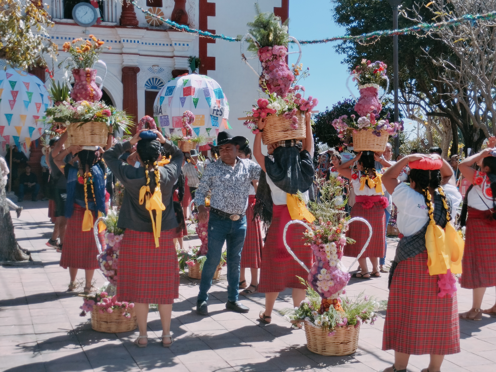

Students see community principles in action, through participation in the Fiesta del Cristo de Esquipulas in Santa Ana del Valle, and direct observation of the communal territory in San Francisco Cajonos. Community members engage in dialogue concerning the internal organization of their villages. A guided visit to the archaeological site of Monte Albán also provides awareness of the historical depth of these indigenous communities.
The Fiesta
Communal Territory
Monte Albán